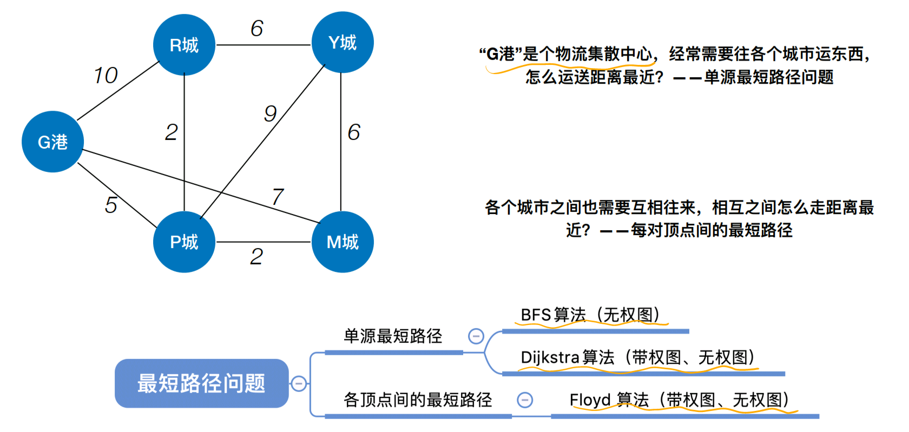
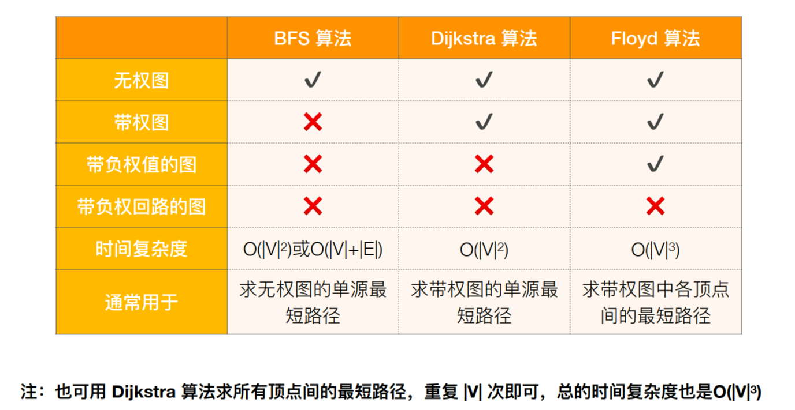
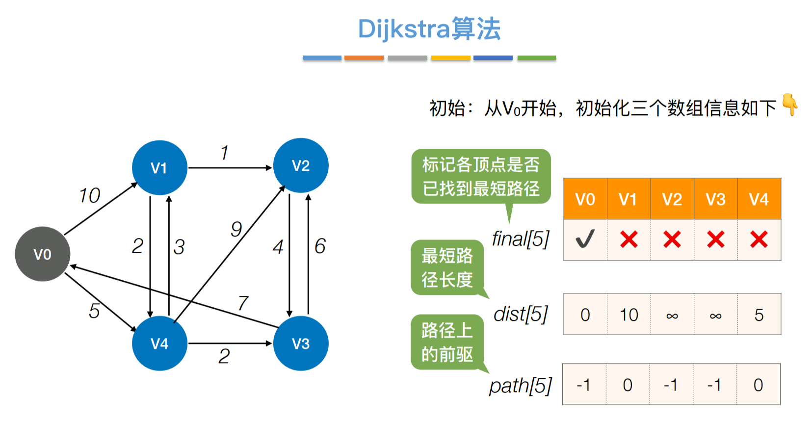
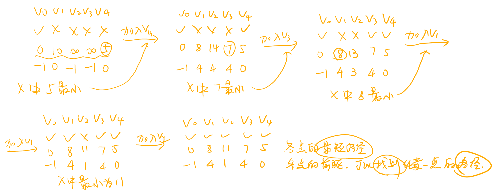

最短路径


一、BFS算法（无权图）
由广度优先算法求最短路径：
//图的广度优先搜索（用图的邻接矩阵、领接表都可以，只是FirstNeighbor和NextNeighbor函数实现不一样）
bool visited[MAX_VERTEX_NUM]; //访问标记数组
void BFSTraverse(Graph G){ //对图G进行广度优先搜索
for(v=0; v<G.vexnum; ++v){
visited[v] = false; //初始化访问标记数组
}
InitQueue(Q); //初始化辅助队列Q
for(v=0; v<G.vexnum; ++v){
if(!visited[v]){ //对每个连通分量调用一次BFS
BFS(G,v); //vi没访问过，从vi开始BFS
}
}
}
void BFS(Graph G, int v){
visit(v); //访问初始顶点v
visited[v] = true; //对v做已访问标记
EnQueue(Q, v); //顶点v入队
while(!isEmpty(Q)){ //队列不空则循环
DeQueue(Q, v); //顶点v出队
for(w=FirstNeighbor(G,v); w>=0; w=NextNeighbor(G,v,w)){//检测v所有的邻接顶点
if(!visited[w]){ //w为v尚未访问的邻接顶点
visit(w); //访问顶点w
visited[w] = true; //对w做已访问标记
EnQueue(Q, w); //顶点w入队
}
}
}
}
实现方式：
用两个数组：
①d数组：记录各点的路径长度。
②path数组：记录各点的前驱。
时间复杂度：
邻接矩阵=O(|V|^2)，邻接表=O(|V|+|E|)
//用BFS求顶点U到其它顶点的最短路径（只改了visit函数调用的两行）
#define INFINITY 4294967295 //宏定义常量“无穷”，4294967295为最大的int值
bool visited[MAX_VERTEX_NUM]; //访问标记数组
void BFS(Graph G, int v){
//d[i]表示从u到i结点的最短路径
for(i=0; i<G.vexnum; ++i){
d[i] = INFINITY; //初始化路径长度
path[i] = -1; //最短路径从哪个顶点过来
}
d[u] = 0; //从u开始
visited[v] = true; //对v做已访问标记
EnQueue(Q, v); //顶点v入队
while(!isEmpty(Q)){ //队列不空则循环
DeQueue(Q, v); //顶点v出队
for(w=FirstNeighbor(G,v); w>=0; w=NextNeighbor(G,v,w)){//检测v所有的邻接顶点
if(!visited[w]){ //w为v尚未访问的邻接顶点
d[w] = d[u] + 1; //路径长度加1
path[w] = u; //最短路径应从u到w
visited[w] = true; //对w做已访问标记
EnQueue(Q, w); //顶点w入队
}
}
}
}
二、Dijkstra算法（迪杰斯特拉算法）（带权图、无权图）
BFS算法的局限性：不适用带权图
实现方式：
用两个数组：
①final数组：记录各顶点是否已找到最短路径。
②dist数组：记录各点的最短路径长度。
③path数组：记录各点路径上的前驱。
每轮遍历final数组，第一遍找到dist最低的顶点，然后加入；第二遍循环遍历更新各点的dist值和path值。
则时间复杂度=O(|V|^2)
Dijkstra算法的局限性：不适用负权值带权图。


三、Floyd算法（弗洛伊德算法）（带权图、无权图）
实现方式：
用两个二维数组：
①A数组：记录各顶点之间目前的最短路径长度
②path数组：记录两点之间的第一个中转点。
以某一点为中转点遍历二维数组，更新两个数组，将所有点作为中转点都遍历一遍，形成三重循环
则时间复杂度=O(|V|^3)，空间复杂度=O(|V|^2)。
Floyd算法的局限性：不适用负权值带权图。
//省略初始化A和path数组
//Floyd算法的核心
for(int k=0; k<n; k++){ //考虑以Vk作为中转点
for(int i=0; i<n; i++){ //遍历整个矩阵，i为行号，j为列号
for(int i=0; i<n; i++){
if(A[i][j] > A[i][k] + A[k][j]){ //以Vk作为中转点的路径更短
A[i][j] = A[i][k] + A[k][j]; //更新最短路径长度
path[i][j] = k; //中转点
}
}
}
}